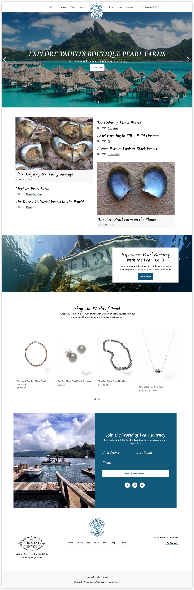
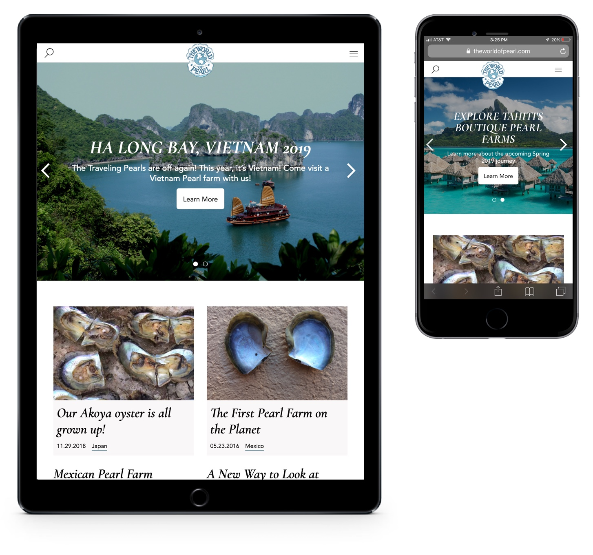
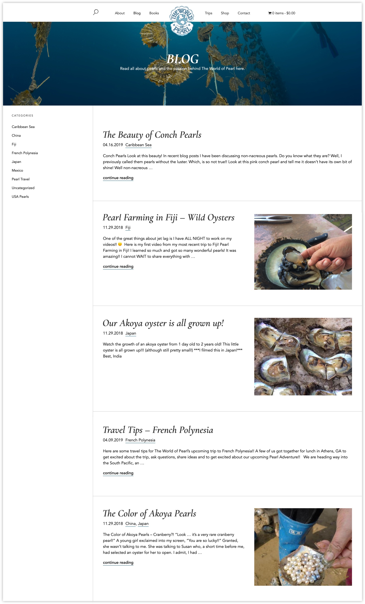
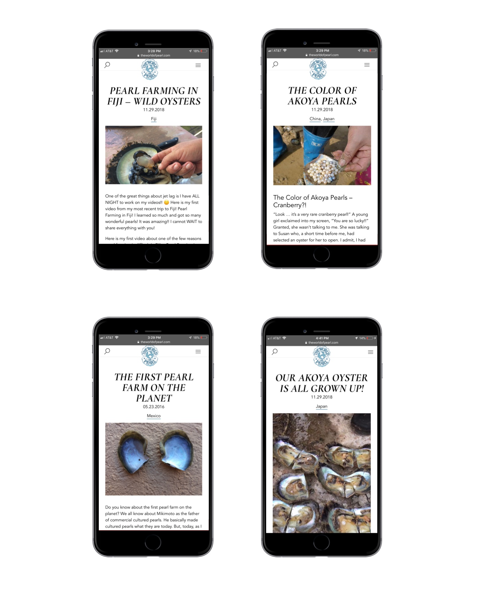
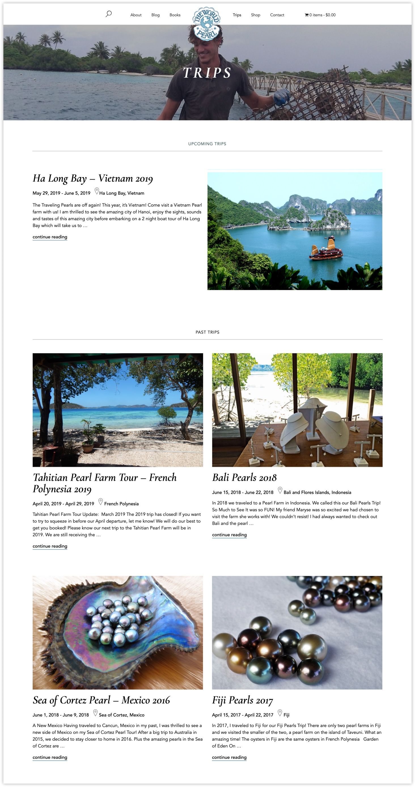
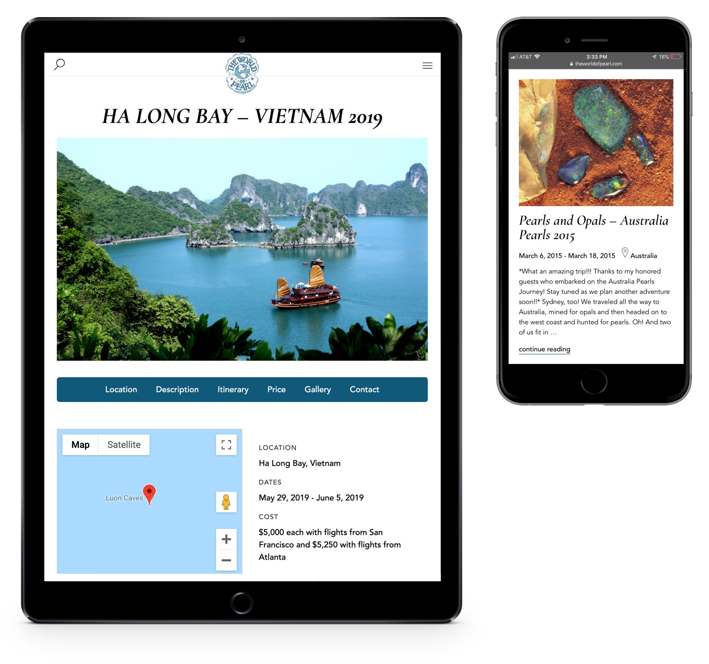
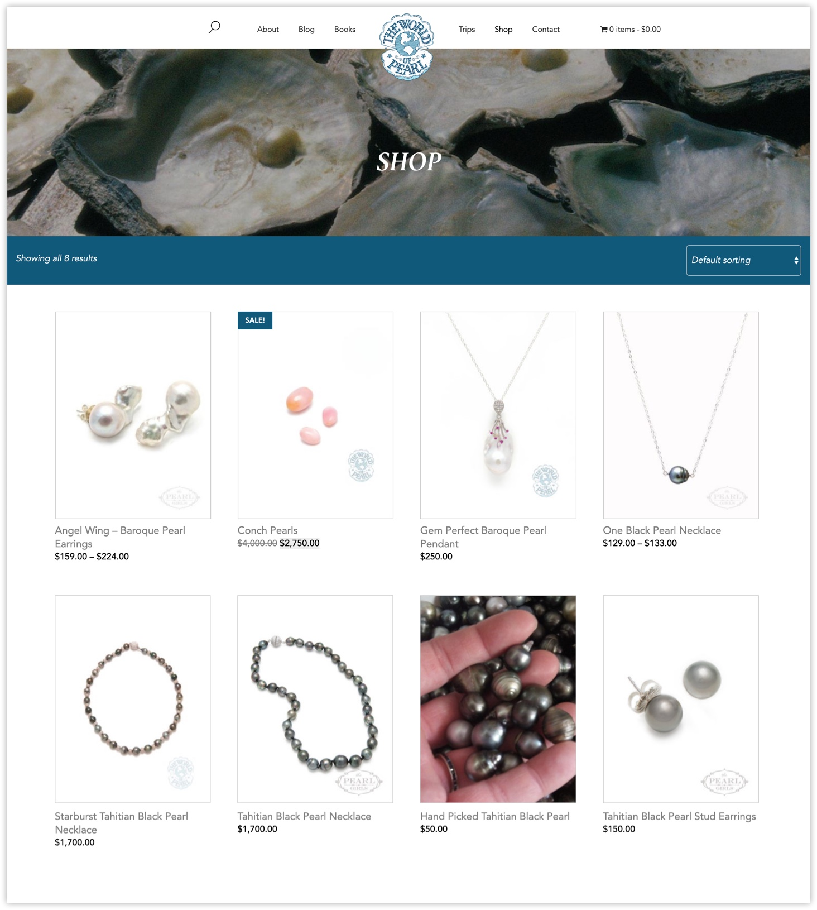
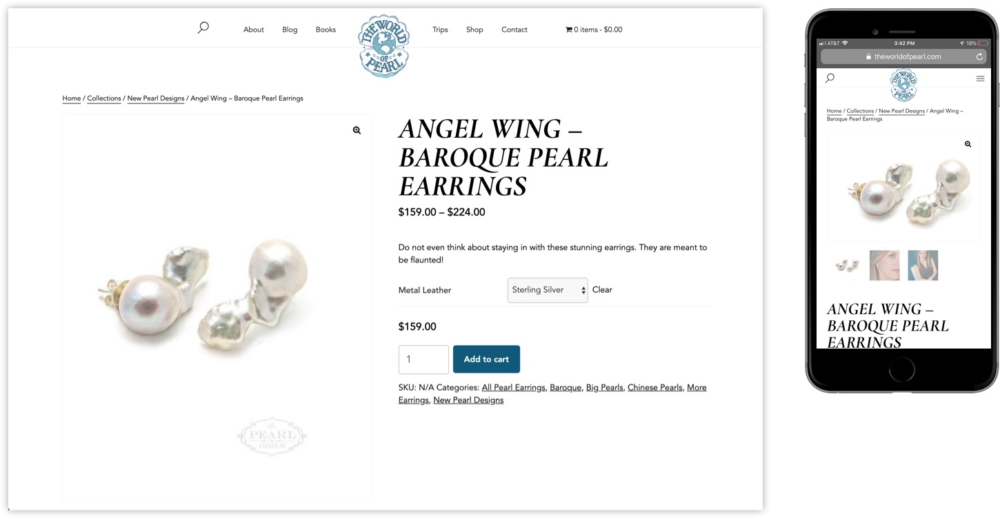

Welcome to The World of Pearl! India Rows, founder of The Pearl Girls, wanted to create a niche website about her international travels to pearl farms. The Pearl Girls is her e-commerce business selling and repairing pearl jewelry, whereas The World of Pearl is all about her involvement in the international pearl industry. The website includes a blog on her international trips and her experiences in the international pearl industry, sign-up information on upcoming trips India hosts and a specialty online shop of pearls she’s sourced directly.

The World of Pearl is user-friendly for all devices, including smart phones, tablets, laptops and desktops.

The World of Pearl blog features a flexible layout for posts that have featured images and posts that do not have featured images. The sidebar also includes a category list based on the countries she discusses in her writing.

India hosts international trips so that anyone can be a Pearl Girl (or guy!). Each trip includes a trip to a pearl farm where the Pearl Girls can hand-select pearls for a one-of-a-kind piece of pearl jewelry. India has hosted trips to Tahiti, Bali, Vietnam, Mexico, Fiji and Australia.

The trips section of the website includes information on upcoming trips, including itinerary, pricing and location. Site visitors can also sign up for trips and the trip newsletter.

The World of Pearl online shop is for pearl jewelry directly sourced from India’s international travels. To view India’s full jewelry line, visit The Pearl Girls.

The online shop is user-friendly on all devices and browsers.
